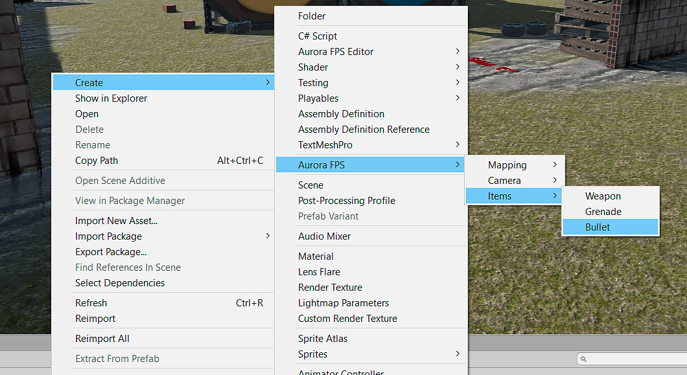

Overview
All shooting systems use Bullet Item as bullets . This is a type that contains basic information.
Create Bullet Item
- Open Asset Menu by right click on project window.
- Go to the path:
Create / Aurora FPS / Items / Bullet

Configure Bullet Item
- Select Bullet Item asset to edit.
- In inspector window will be opened editor.
| Field | Description |
|---|---|
| ID | Unique identifier, generated automatically. Can be edited manually (required property). |
| Name | Name of the bullet (optional property). |
| Description | Description of the bullet (optional property). |
| Image | Sprite of the bullet (optional property). |
| Damage | Damage caused by a bullet (required property). |
| Impulse | The impulse that will be transmitted to the physical object when it is hit (optional property). |
| Balls Variance | The number of produced fractions when fired, the default is 1 that means it's an ordinary bullet (optional property, suitable for shotgun bullet). |
| Balls Numbers | The strength of the spread of these fractions (optional property, suitable for shotgun bullet). |
| Decal Mapping | This is a map that contains sounds and traces of a given bullet hit on different surfaces. |
| Drop Properties | It contains the data of the object that will be thrown when the player throws the bullet. |